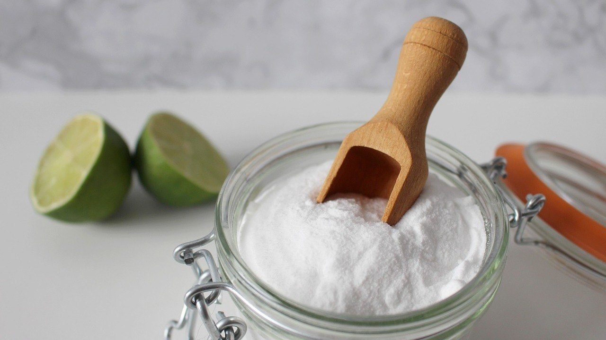
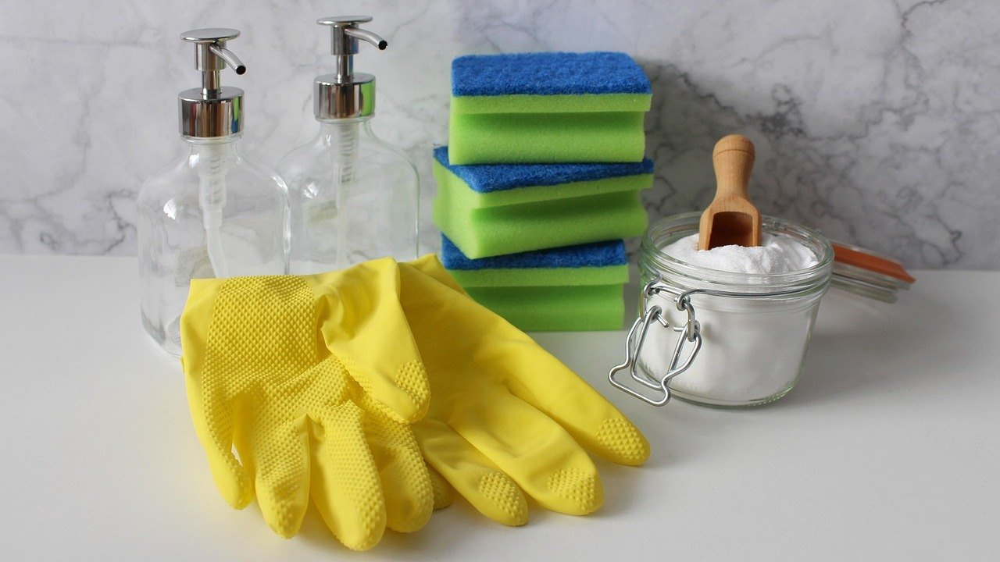

Как отмыть вытяжку от жира в домашних условиях: 5 ошибок, из-за которых налёт возвращается
Как отмыть вытяжку от жира, обычно задумываешься, когда уже поздно: решётка стала липкой, на корпусе тёмные подтёки, а вытяжка гудит, но запахи на кухне всё равно остаются.
У нас на кухне жарят часто: котлеты, мясо, которое готовит муж, пирожки. Поэтому вытяжка работает почти каждый вечер, и жир на ней появляется быстрее, чем хочется.
Жир оседает на фильтре и корпусе тонким слоем. Пока он свежий, он смывается легко. Но со временем он темнеет, твердеет и собирает пыль, и тогда его уже не взять обычной губкой. Почти все трудности с вытяжкой из-за того, что за ней ухаживают редко и неправильно.
Мыть раз в год, перед праздником
Многие вспоминают о вытяжке перед Новым годом или большой уборкой. За это время жир превращается в твёрдую корку, которая сидит в каждой ячейке решётки.
Что делать: мыть съёмный фильтр раз в месяц, а корпус протирать раз в неделю влажной тряпкой с каплей средства для посуды.
Если готовите много и часто жарите, фильтр лучше мыть раз в две-три недели. Свежий налёт снимается за десять минут, засохший за целый вечер.
Ещё одна мелочь: включать вытяжку за пару минут до начала жарки и выключать минут через десять после. Так больше жира уходит в фильтр, а не оседает на шкафчиках рядом.
Тереть решётку всухую
Самое первое желание: взять губку и начать скрести. Но засохший жир от трения только размазывается, а металлическая губка оставляет царапины, в которых потом копится новая грязь.
Что делать: сначала замочить решётку в горячей воде с содой и средством для посуды на 20–30 минут, а потом пройтись мягкой щёткой.

Удобнее всего замачивать в раковине или в большом противне. На литр горячей воды берут две-три ложки соды и немного средства для посуды.
Кипяток и сода для любого фильтра
Старый способ прокипятить решётку в воде с содой хорошо работает для металлических фильтров. Но алюминиевые решётки от горячей соды темнеют и покрываются пятнами.
Что делать: алюминиевые фильтры мыть в тёплой, а не кипящей воде со средством для посуды, без соды и щелочных средств.
Если не знаете, из чего ваш фильтр, посмотрите инструкцию или поднесите магнит: к нержавейке он обычно прилипает слабо или совсем не прилипает, к алюминию тоже. Алюминий намного легче на вес.
Угольный фильтр под краном
В некоторых вытяжках стоит не только металлическая решётка, но и угольный фильтр. Его часто моют вместе с решёткой, и после этого он перестаёт задерживать запахи.
Что делать: угольный фильтр не мыть, а менять по сроку, указанному в инструкции, обычно раз в несколько месяцев.
Если вытяжка работает, а запахи не уходят, первым делом стоит проверить именно его. Новый фильтр сразу возвращает вытяжке силу.
Корпус обычным средством для стёкол
Средство для стёкол оставляет разводы на жирной поверхности, а жёсткие порошки царапают крашеный или стальной корпус. После такой чистки вытяжка выглядит хуже, чем до неё.
Что делать: протирать корпус тёплой водой с каплей средства для посуды, а потом сухой мягкой тряпкой из микрофибры.

Старые жирные подтёки хорошо снимает паста из соды с капелькой воды: нанести на пару минут и мягко стереть. Кнопки лучше протирать слегка влажной тряпкой, чтобы вода не попала внутрь.
Если запомнить только одно
Вытяжку легче не запускать, чем отмывать. Раз в месяц положить решётку в горячую воду с содой и средством для посуды, а корпус протирать после каждой большой жарки, и большая уборка перед праздником превратится в мелочь.
А как часто вы моете решётку вытяжки?